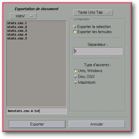

<!-- Documentation XQuad (c)1995-2000 AXENE contact axene@axene.org>
<html>

<head>
<title>File Selector: Exporting Documents</title>
</head>

<body BGCOLOR="#FFFFFF" BACKGROUND="Images/back.gif" TEXT="#000000">

<p ALIGN="right">  </p>

<p><br>
<br>
The <i>Exporting Documents</i> file selector selects a file name to which a portion of the
active worksheet will be exported. This file selector can take on three forms, depending
upon the element used from the <i>file/export</i> sub-menu. </p>

<p><br>
</p>

<hr>

<h2 align="center"><a NAME="fs_export_vector">Export in the Form of Line Art</a></h2>

<p>To access this file selector, go through the menu <i>File/Export/Line art</i>.
Exportation in the form of line art can be carried out on a single cell selection from the
worksheet or on a frame selection containing a graph. In the first case, the <a HREF="Box_PrintSetup.html#button_print_grid">Print Grid</a> and <a HREF="Box_PrintSetup.html#button_print_headers">Print Row and Column Headers</a>
parameters from the <a HREF="Box_PrintSetup.html">Print configuration</a> dialog box will
be taken into account. Exportation of line art is done in Adobe Illustrator format. This
file format can be imported in Xclamation, Axene's desktop publishing software. The<i> .ai</i>
extension will be automatically added to the filename. This selector is identical to the <a HREF="Box_File_Selectors.html#file_selector">standard file selector</a>.</p>

<p><br>
</p>

<hr>

<h2 align="center"><a NAME="fs_export_text">Export Text</a></h2>

<p><a NAME="format_list">To access this file selector, go through the <i>File/Export/Text</i>
menus<i>.</i> In this particular file selector a pulldown list at the top right portion of
the dialog box selects the text format to be exported. Depending upon the format chosen,
the <i>Configuration Section</i> at the right side of the box can take on two forms:</a><br>
&nbsp; 

<ol>
  <li>For formats: &quot;Text UNIX Tab&quot;, &quot;Text UNIX CSV&quot;, &quot;Text DOS
    Tab&quot;, &quot;Text DOS CSV&quot;, &quot;Text Mac Tab&quot;, and &quot;Text Mac
    CSV&quot; the selector takes on the following form: <p align="center"> <br>
    <i><small>Screen snap: Export file selector</small></i> </p>
    <p><br>
    <a NAME="configuration_section">The configuration section is composed from top to bottom:</a><br>
    &nbsp; <ul>
      <li><a NAME="selection_button">The <i>Export Selection</i> button allows the user to select
        whether or not one wants to export only the selected cell or the entire utilized area of
        the worksheet. If this button is engaged, only selected cells will be exported.</a><br>
        &nbsp;</li>
      <li><a NAME="formula_button">The <i>Export formulas</i> button allows the user to select
        whether one wants to export formulas or formula results. If this button is engaged and a
        cell to be exported contains a formula, (&quot; =pi * 12 squared&quot; for example), the
        formula will be exported to the new file as a character string. If this button is not
        engaged, the result of this formula would be exported (&quot;452,38934211693022633&quot;
        in the example).</a><br>
        &nbsp;</li>
      <li><a NAME="separator_textfield">The <i>Export Selection</i> button allows the user to
        select the text string to use as a cell separator. This string will be used to
        horizontally separate cells (by columns).</a><br>
        &nbsp;</li>
      <li><a NAME="accents_buttons">The three Accent Types buttons (&quot;UNIX,Windows&quot;,
        &quot;DOS,OS/2&quot; and &quot;Macintosh&quot;) specify the accent table to be used to
        obtain a good conversion between two systems and environments.</a><br>
        &nbsp; </li>
    </ul>
  </li>
  <li>For formats <i>'Unix Fomated Text&quot;</i>, <i>&quot;Dos Fomated Text&quot;</i> and <i>&quot;Mac
    Fomated Text&quot;</i>, the selector takes on the following form:<p align="center"> <br>
    <i><small>Screen snap: Export file selector</small></i> </p>
    <p><br>
    The <i>Configuration </i>section is composed from top to bottom by:<br>
    &nbsp; <ul>
      <li><a NAME="selection_button2">The <i>Export Selection</i> button determines whether the
        cell selection only will be exported or the entire used area of the worksheet. If this
        button is engaged only the selected cells will be exported.</a><br>
        &nbsp;</li>
      <li><a NAME="grid_button">The <i>Add Grid</i> button enhances cell outlines. When this
        button is engaged, each cell will be outlined by characters available in the specified
        character suite.</a><br>
        &nbsp;</li>
      <li><a NAME="header_button">The <i>Add Headers</i> button adds row and column headers upon
        exportation. When this button is engaged the worksheet's coordinate system appears
        transparently in the export file.</a><br>
        &nbsp;</li>
      <li><a NAME="encoding_buttons">The three Accent Types buttons (&quot;UNIX,Windows&quot;,
        &quot;DOS,OS/2&quot; and &quot;Macintosh&quot;) specify the accent table to be used to
        obtain a good conversion between two systems and environments.</a></li>
    </ul>
    <p>When exporting in formated text format the cells of a column will be exported with the
    same number of characters. In this case, a file displayed with non-proportional fonts will
    appear to have aligned cells.</p>
  </li>
</ol>

<p>The lower left and lower portion of the file selector are used like a <a HREF="Box_File_Selectors.html#file_selector">standard file selector.</a>. </p>

<p><br>
</p>

<hr>

<h2 align="center"><a NAME="fs_export_html">Export as HTML</a></h2>

<p>To access this file selector, pass through the <i>File/Export/HTML</i> menu. The
ensemble of cells from the utilized worksheet area will be exported. HTML rendering is
done with the help of a table (marked &lt;table&gt;...., &lt;/table&gt;) in HTML 3.0
style. The .<i>html</i> extension will be automatically added to the filename. This file
selector is like that of the <a HREF="Box_File_Selectors.html#file_selector">standard file
selector</a>.</p>

<p><br>
</p>

<hr>

<p ALIGN="right"></p>
</body>
</html>
